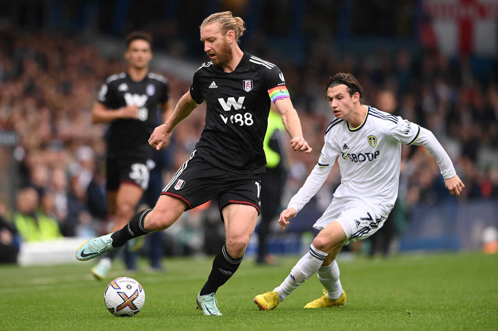

Ping-Pong
meaning
Ping Pong is a term commonly used to refer to the sport of table tennis.
It is a game played with small paddles and a lightweight ball on a table divided
by a
net. The objective of the game is to hit the ball back and forth over the net, with the
goal of making the ball land on the opponent's side of the table,
and thus score a point.
The name "ping pong" was derived from the sound made by the ball when it is hit back and
forth across the table. Ping pong is a popular
sport played both recreationally and
competitively all over the world, and is even an Olympic sport.
rules
- Service: A player must hit the ball from behind the end of the table, with the ball resting on an open palm, and the ball must be tossed upwards at least 6 inches before being hit.
- Return: The ball must be returned over the net and hit the opponent's side of the table. The ball cannot touch the net or edges of the table during the rally.
- Scoring: Points are awarded to the player who wins a rally. A game is typically played to 11 points, and the winner must be ahead by at least two points.
- Change of Service: After every two points, the player who served last must give the ball to the opponent to serve.
- Let: A let is called if the ball hits the net on a serve, and the ball is re-served without penalty.
- Doubles: In doubles play, teammates take turns serving the ball and players must alternate hitting
the
ball.
The ball must also bounce on each side of the table at least once during a rally.
media
